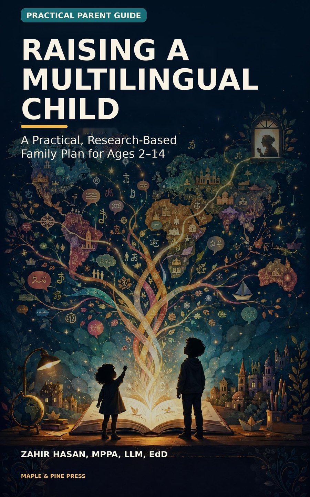

Raising a Multilingual Child
A Practical, Research-Based Family Plan for Ages 2–14

Your child can keep your languages. Here is the plan.
Most advice about raising bilingual or multilingual children stops at the method: one parent, one language; minority language at home; "just be consistent." Then real life arrives. School takes over. One parent works late. The child understands everything and answers in the wrong language. This book starts where that advice ends.
Raising a Multilingual Child is a working system for families with children aged 2 to 14, built on verified research and shown in full through two families you follow from their first planning conversation to a review ninety days later: the Okada-Frasers in Tokyo, protecting English against Japanese school, and the Mensah-Lindqvists in Copenhagen, bringing Twi back for a nine-year-old who loves football and a twelve-year-old who has started to refuse it.
Inside you will find:
• A seven-day language audit and the TIES test, shown completed for a real week
• Five family language strategies, with each family's written strategy and exceptions
• Age-specific chapters for 2–4, 5–7, 8–10, and 11–14, with a four-week launch plan, a six-week project, and a reset meeting with a resisting teenager
• Filled-in scripts and letters: a call plan for grandparents, a note to a teacher, a brief for a babysitter, a communication profile for a speech-language pathologist
• Practical answers to mixing, reluctance, inconsistency, sibling influence, teasing, literacy in two writing systems, and developmental concerns
• A complete 90-day family plan with dates, the day-90 review as a conversation, and every worksheet shown filled in before the blank
• Sixty activities, six of them worked out in full
• Fifty-three verified research sources, explained in plain language.
Written by an educator and parent-facing researcher based in Tokyo, this is a book to use on a Tuesday evening—not a book merely to admire.
Ebook and paperback · Maple & Pine Press
- Author
- Dr. Zahir Hasan
- Publisher
- Maple & Pine Press, Tokyo
- List
- Education & Practical Guides